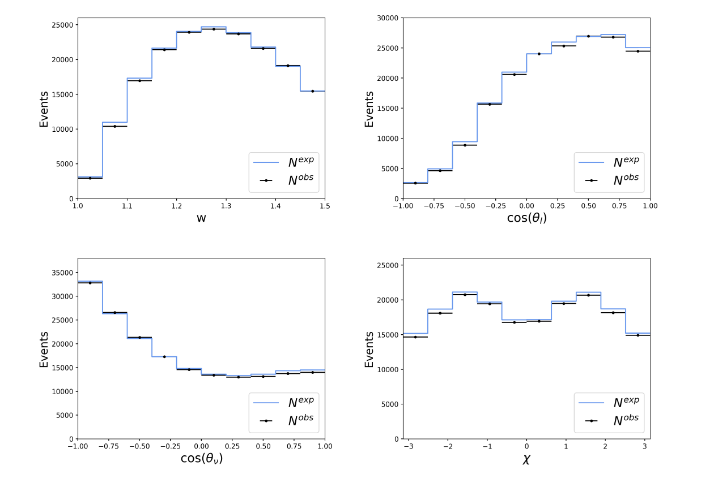
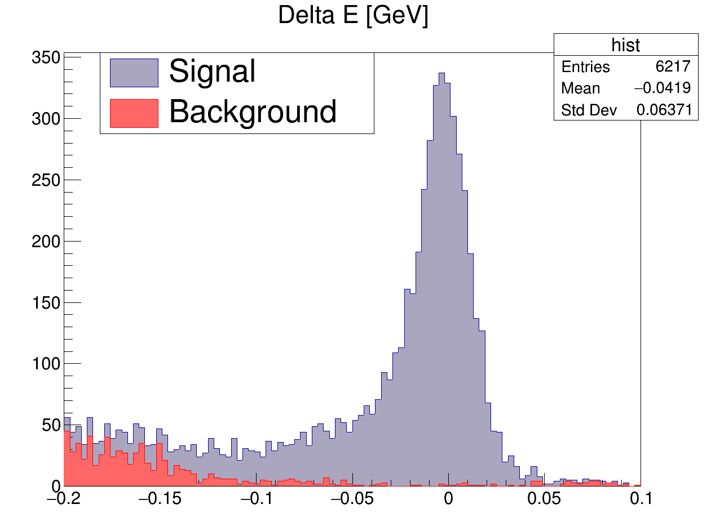
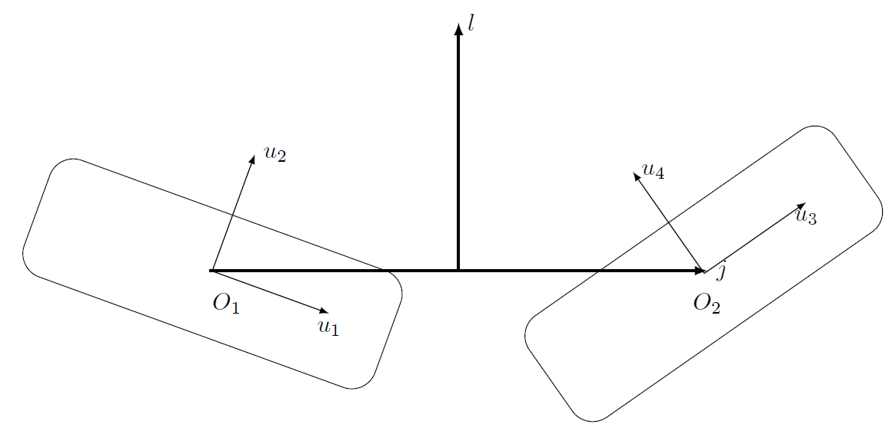

Master's Thesis: In my master's thesis, I focused on the
experimental determination of the CKM matrix element |Vcb|,
which plays a central role in the Standard Model of particle physics.
The goal was to investigate discrepancies between different methods
of determining |Vcb|, especially in exclusive and inclusive semileptonic decays.
Tools Used: Python, NumPy, SciPy, Matplotlib

Project thesis: In this project, I analyzed datasets from the international Belle experiment, which was conducted in Japan from 1999 to 2010.
The goal was to gain insights into a specific particle decay.
Tools Used: C++, CERN ROOT

Project thesis: In this project, I developed criteria for the overlap of superelliptical particles, which are important for Monte Carlo simulations.
The task was to develop a mathematical criterion to determine whether these particles overlap, touch, or are separated.
Tools Used: Mathematica, Fortran

Bachelor's Thesis: In my bachelor's thesis, I investigated how the propagation of light in an optical waveguide can be influenced by the placement of nanoparticles.
The goal was to determine whether optical diodes can be realized in this way.
Tools Used: Python, Pandas, Netgen/NGSolve